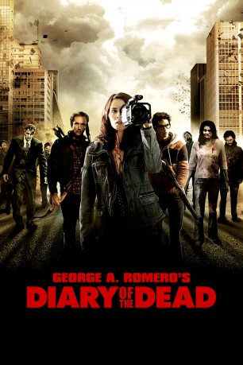

#9957 Diary of the Dead
 
 IMDB-Wertung: 5.7 / 10
IMDB-Wertung: 5.7 / 10  Tomatometer: 61
Tomatometer: 61  Metascore: 66
Metascore: 66 
Der Student Jason dreht, zusammen mit ein paar Freunden, einen amateurhaften Horrorfilm für seine Abschlussarbeit an der Uni. Noch während ihren Dreharbeiten erfahren sie von mysteriösen Vorfällen, in denen Tote wiederauferstehen. Die Gruppe entschließt sich, zusammen im Wohnwagen zu reisen, um zu ihren Familien zu fahren. Der unheimliche Terror nimmt in enormen Tempo zu und Jason legt seine Kamera nicht ab, denn er will nun den wahren Horror filmen…
Jahr: 2007
Dauer: 95 Minuten
FSK: 18
Land: USA Studio: Third Rail ReleasingTonspuren: DTS - ,
Untertitel: Deutsch,
Auflösung: 1080p (1920x1040) Größe: 5959 MB
Genre: Thriller, Horror, Sci-Fi, Fantasy
Regisseur:  George A. Romero
George A. Romero
Drehbuch: George A. Romero
Soundtrack: Norman Orenstein
Darsteller:
- Todd Schroeder als Brody
 Laura de Carteret als Bree
Laura de Carteret als Bree- Amy Lalonde als Tracy Thurman
 Martin Roach als Stranger
Martin Roach als Stranger Joshua Close als Jason Creed
Joshua Close als Jason Creed Joe Dinicol als Eliot Stone
Joe Dinicol als Eliot Stone- Michelle Morgan als Debra Moynihan
 Shawn Roberts als Tony Ravello
Shawn Roberts als Tony Ravello Tatiana Maslany als Mary Dexter
Tatiana Maslany als Mary Dexter Daniel Kash als Police Officer
Daniel Kash als Police Officer- Chris Violette als Gordo Thorsen
 Megan Park als Francine Shane
Megan Park als Francine Shane George Buza als Tattooed Biker
George Buza als Tattooed Biker- Tino Monte als News Anchor
 Matt Birman als Zombie Trooper
Matt Birman als Zombie Trooper Greg Nicotero als Zombie Surgeon
Greg Nicotero als Zombie Surgeon Nick Alachiotis als I.V. Zombie
Nick Alachiotis als I.V. Zombie- Scott Gibson als Birthday Party Father
- Jamie Bloch als Birthday Girl
 Boyd Banks als White Man
Boyd Banks als White Man- Janet Lo als Cell Phone Woman
- Alan Van Sprang als Colonel
- Shelley Cook als Elderly Woman
 Wes Craven als Newsreader (uncredited)
Wes Craven als Newsreader (uncredited) Guillermo del Toro als Newsreader (uncredited)
Guillermo del Toro als Newsreader (uncredited) Stephen King als Newsreader (uncredited)
Stephen King als Newsreader (uncredited)- Mani Nasry als Zombie (uncredited)
 Simon Pegg als Newsreader (uncredited)
Simon Pegg als Newsreader (uncredited)- George A. Romero als Police Chief Arthur Katz (uncredited)
 Tom Savini als Man Shouting on Radio 'Shoot in the Head' (uncredited)
Tom Savini als Man Shouting on Radio 'Shoot in the Head' (uncredited) Quentin Tarantino als Newsreader (uncredited)
Quentin Tarantino als Newsreader (uncredited)- Philip Riccio als Ridley Wilmott
- Scott Wentworth als Andrew Maxwell
- Donna Croce als Zombie Nurse
- R.D. Reid als Farmer
- Kyle Glencross als Bupkes the Clown
- Jack Birman als Billy
- Trish Adams als Dead Mrs. Moynahan
- Ron Payne als Elderly Man
- James Binkley als Trooper
- Anthony Cancelliere als Zombie (uncredited)
- Alexandria DeFabiis als Zombie (uncredited)
- Ara Katz als Shopping Cart Zombie (uncredited)
Datei: X:\FSK18-2000-2009\Diary of the Dead (2007, FSK18, 1920x1040).mkv seit 15.11.2018
Festplatte: FSK18
 Es gibt insgesamt 106 Filme in der Gruppe 'FSK18-2000-2009'
Es gibt insgesamt 106 Filme in der Gruppe 'FSK18-2000-2009'